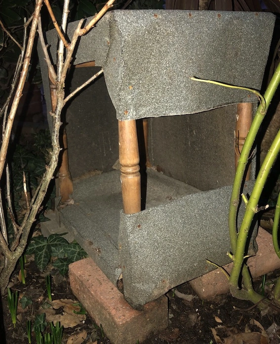
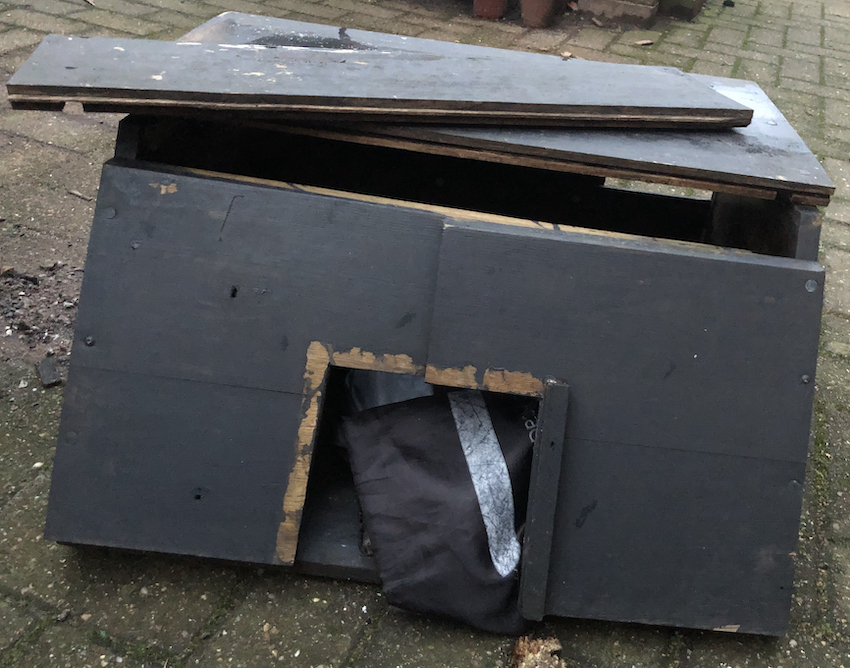
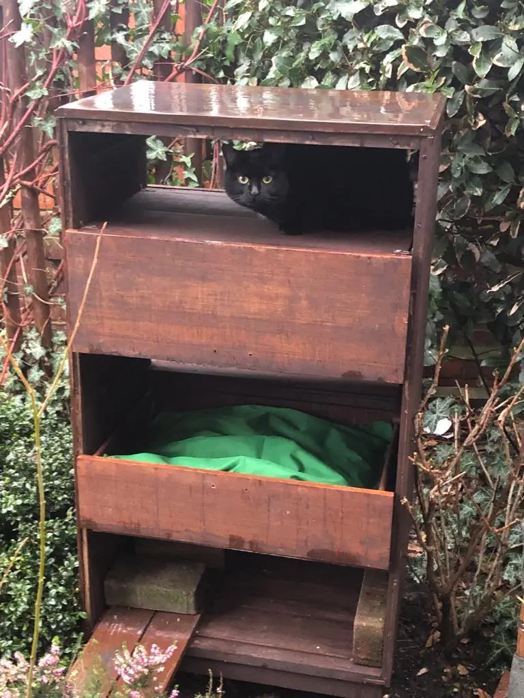

Shelter in the Rain
Bet you weren't expecting me, Kuma, to post a sustainability idea. But that canine has taken over our adventures page to whine about his sore paw so I needed somewhere else to have my say.
It's been mentioned that I like the great outdoors. Don't tell the humans, but like most cats I can find shelter and additional meals when I want. However, there are times when I lurk in our garden, getting wet, waiting for them to notice and open the door.
Is it really too much to ask for a cat flap? Or someone watching the garden all the time to see when I return?
I know they're concerned.
They've put a blanket in the shed and tried to lure me in to use it by leaving snacks in there too. 'Boots', the cat from down the street, was very grateful. Just not my scene.
They've weatherproofed an old occasional table to give me some shelter for outside dining when I was just getting used to them.
Then made what looked like a kennel from the top of an old wooden desk. Not a bad attempt but a bit too close to the ground and the roof wasn't too sturdy.
So they took an old chest of drawers and made me a high-rise shelter.  They like to think it's still under construction, needing a better paint job and the like, but as you can see the penthouse already has a tenant. Me!
So what did they do?
They kept two of the drawers and reinforced the bases with scraps of wood. Anyone would think I'm as hefty as the canine!
One drawer went in place as normal and they've very kindly padded it. I'd prefer something fluffier, but apparently that wouldn't be waterproof. And they had waterproof cushion covers hanging around the house for some reason.
The remaining drawer went in upside down, above the other, leaving a gap. A nice roof for the bedded area and a perfect vantage point for observing the door, wandering canines and potential prey. A bit more wood was nailed in at the back to add more protection from the elements.
They're contemplating ramps and steps, obviously thinking I'm as infirm as Jak. What they really need to install is a roof top bird table. I don't mind sharing my condo. Really...